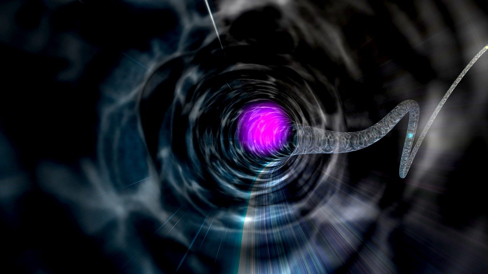

Waterslide Corp.® |
Home | Fale Conosco |
|  | |
Tobogã QuânticoEmbarque numa nova aventura na nossa mais incrível atração, o Tobogã Quântico!
Esqueça a geometria euclideana e faça inveja a Schrödinger nessa
atração de 350 metros de extensão! Isso mesmo! Não se deixe
enganar pelos aparentes 10 metros de comprimento do escorregador
, pois graças às incríveis descobertas e invenções de Sir Ronald
Nicholson e sua equipe, você passa maior parte da experiência
escorregando No fim da sua escorregada, você ainda ganha a chance de participar de um quiz especial com o Sir Ronald em pessoa! O que você está esperando? Entre na diversão quântica!
Comportamento inadequado na atração pode resultar em:
|
|